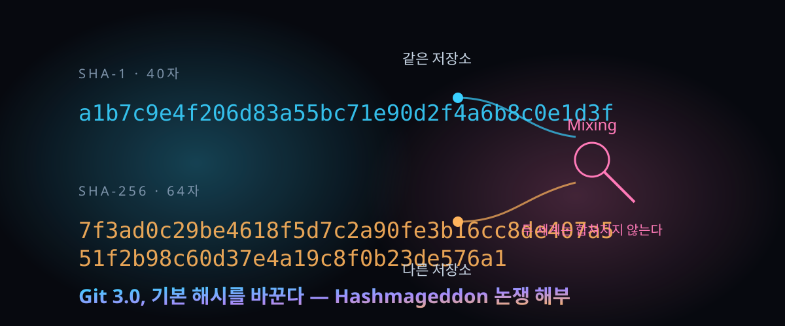

10월 1일 개시, 해시 40자→64자 — Git 3.0 기본값 전환이 '역대급 파괴'라 불리는 이유

결론부터. 이번 전환은 보안 패치가 아니라 '저장소의 신분 증명 방식'을 통째로 바꾸는 공사다. 그리고 그 공사를 정면으로 깬 글이 하루 만에 해커뉴스 표 329개를 모았다.
Git 차기 큰 버전인 3.0은 git init으로 새로 만드는 저장소의 기본 내용 해시를 SHA-1에서 SHA-256으로 바꾼다. 저장소 관리 도구 GitButler를 세운 스콧 차콘이 10월 1일 이 계획의 비용을 추격한 글을 냈고, 같은 날 해커뉴스에 올라 하루 만에 표 329개·댓글 319개를 기록했다(Algolia API 실측 2026-10-02).
글의 핵심 주장 두 개는 이렇다. 첫째, Git에서 SHA-1의 구실은 '콘텐츠 주소'이지 '신뢰의 증명'이 아니라서 공격 시나리오가 대부분 공상이다. 둘째, 그래도 강행한다면 세계가 두 부류의 저장소로 영구히 갈라지는데, 그 비용이 압도적으로 크다. 반론도 만만치 않게 몰려왔다.
30초 요약
| 항목 | 내용 |
|---|---|
| 무슨 사건 | Git 3.0이 신규 저장소 기본 해시를 SHA-1→SHA-256으로 변경 예정. 반발 글이 10/1 해커뉴스 1위급(표 329·댓글 319, 10/2 API 실측) |
| 저장소 차이 | 해시 표기가 40자에서 64자로 길어진다. git init --object-format=sha256는 지금도 실험 가능 |
| 핵심 리스크 | SHA-1 저장소와 SHA-256 저장소는 서로 참조할 수 없다. 서브모듈·서트리도 같은 포맷이어야 해서, 라이브러리는 두 갈래 유지 압박 |
| 쓴소리의 근거 | 충돌 공격 논문(SHAttered 2017 등)은 있지만 '실수로' 해시가 겹칠 확률은 SHA-1 160bit 기준 초유의 규모. 실제 사고는 해시가 아니라 의존성 계정 탈취에서 난다 |
| 제시된 대안 | 내용 트리를 별도 알고리즘으로 다시 hashed 한 헤더를 서명 대상에 끼우는 방식. 2015년 git-evtag가 이미 같은 길을 갔다 |
| 반대진 영점 | "2017년엔 실전형 증명이었다", "머지 리뷰 전에 fetch 받는 관행이 무너진다", "새로 만드는 저장소만 대상이라 부담은 작다" |
1. 무엇이 터졌나
Git은 '내용이 주소'인 데이터베이스다. 파일이든 커밋이든 내용을 hash로 식별하고, 같은 내용은 두 번 저장되지 않는다. 상위 커밋이 하위 커밋의 해시를 물려받기 때문에 하나만 고쳐도 이후 역사의 주소가 전부 바뀐다. 2005년부터 이 주소 생성기에 SHA-1이 쓰여 왔고, 20년 동안 표기는 40자 16진수였다.
여기에 손대는 이유는 학술적이다. 2017년 SHAttered, 2020년 Shambles 같은 논문으로 '노력을 들이면 서로 다른 두 파일을 일부러 같은 SHA-1 해시에 붙일 수 있다'는 게 증명됐다. Git 진영은 그 대비책(충돌하는 두 객체를 전부 거부하는 전달 규칙 등)을 이미 적용해 왔고, 다음 큰 버전에서는 아예 기본값을 SHA-256으로 옮기기로 했다. 글쓴이가 문제의 지점으로 집는 단어가 있다. 알고리즘 강도가 아니라 '기본값'이라는 단어다. 옵션으로 둘 땐 관심 없는 사람이 그냥 지나가지만, 기본값이 되면 전부 강제로 두 세계 중 하나에 소속된다.
그가 실물로 돌려 보여준 풍경은 이렇다. 실험 플래그로 SHA-256 저장소를 만들어 push를 시도하면 호스트가 수신 거부 메시지를 뱉는다. 서버 저장소를 만들 때 어떤 해시를 쓸지 선택해야 하는 세상이 오는데, 글쓴이의 표현을 빌리면 "일반인이 그 선택지의 무게를 알 리 없다". 다만 "지금 GitHub에 못 올린다"는 서술 자체는 현재 상태의 얘기이고, 3.0 출시 전까지 호스트 지원이 정비될 가능성은 반론 쪽에서 여러 번 지적됐다.
2. 왜 대단한가
① '신뢰'와 '무결성'을 한 단어로 써 온 20년의 관성에 대한 공격
글의 뼈대는 이 한 문장으로 줄 수 있다. Git에서 해시가 보장하는 것은 '내가 받은 내용이 저 주소의 내용과 같다'는 것까지이고, '저 내용을 신뢰한다'는 근거는 처음부터 아니었다. 그 자리에 있던 것은 '어디서 받아야 하는가'의 문제, 즉 배포망에 대한 신뢰다. 프로젝트를 하나만 쓰고 그 저장소의 쓰기 권한이 이미 위험하다면, 격자는 정교한 충돌 공격을 쓰지 않아도 메인 브랜치에 아무거나 올릴 수 있다. 그러니 충돌 공격을 막자고 전 생태계의 주소를 다시 부여하는 공사는 '이론상 존재하는 문제를 위해 실재하는 비용을 지불하는 거래'라는 것이 주장의 요지다.
② 우연한 충돌이 '있을 수 없는 일'인 규모, 그리고 그 숫자
글은 우연한 충돌 확률을 산으로 잡는다. SHA-1의 160bit 출력에서 생일 경계에 따라, 프로젝트 안의 무작위 파일 개수가 10의 24승 개 수준은 돼야 서로 다른 파일의 해시가 우연히 겹칠 확률이 유의미해진다. 이 수치는 계산식에서 나온 값이라 재현 가능하지만, 실제 위험을 논할 때는 '우연'이 아니라 '고의'가 문제라는 반론이 뒤에 붙는다(4장 참조).
③ '두 세계는 섞이지 않는다'는 구조적 결정
전환이 골치 아픈 진짜 이유는 여기 있다. 한 저장소가 다른 해시 저장소를 가리킬 수 없다. 서브모듈을 쓰는 라이브러리는 기존 프로젝트(SHA-1)와 신규 프로젝트(SHA-256) 양쪽을 다 충족하려면 저장소를 두 개 운영해야 할 판이다. 기존 프로젝트를 제자리에서 전환하면 객체가 전부 다시 해싱되므로 과거 커밋 URL이 죽고, 슬랙·메일·사내 문서에 적힌 40자 주소가 고아 링크가 되며, 기존 서명도 전부 무효화된다. '40자인지 64자인지 검사하는' 전 세계 스크립트와, Git 바이너리를 타지 않고 라이브러리로 재구현된 도구들(거의 전부가 부분 지원)도 함께 흔들린다. 글은 구글의 준비 상황을 다룬 발표를 인용하며 "사내 신규 프로젝트는 당분간 SHA-1으로 되돌리는 전사 오버라이드를 걸 가능성"까지 전한다.
④ 대안이 이미 있다 — 그리고 그게 이 글의 진짜 청구서
글쓴이의 제안은 '트리를 독립적으로 다시 해싱한 헤더'다. 커밋이나 태그에 그 헤더를 끼우고 서명하면, 서명자는 SHA-1 체계와 독립적인 검증 근거를 함께 공표하는 셈이다. 같은 아이디어는 2015년부터 git-evtag라는 도구로 실재했다. 글쓴이가 직접 만든 시제품은 체리피크한 최악 케이스(서브모듈까지 재귀, 210만 파일·35GB 작업 트리)에서 전체 검증 합계 생성에 5초(Mac 멀티스레드), 리눅스 트리 257ms, Git 자체 저장소 17ms가 걸렸다. 주소 체계는 건드리지 않고 신뢰 경로만 하나 더 얹는 방식이라, 알고리즘이 또 깨져도 이주 대신 헤더 종류만 늘리면 된다는 것이 청구서의 결론이다.
3. 바로 써먹기
오늘 당장 내 저장소가 뒤집히지는 않는다. 전환의 화살은 '3.0 이후 새로 만드는 저장소'와 '자발적으로 이주하는 프로젝트' 두 곳만 향한다. 대신 두 가지만 해 두면 6개월 뒤에 당황하지 않는다.
첫째, 내 도구 체인이 해시를 어떻게 다루는지 안다. CI 설정, 배포 파이프라인, 사내 대시보드 중에 '커밋 해시 = 40자'를 가정하는 스크립트가 있으면 목록에 남긴다. 둘째, 외부 코드를 '주소로 신뢰'하는 습관이 있으면 그 신뢰를 서명으로 옮긴다. 태그에 서명하고(pgit·git-evtag 계열), 서명 검증을 릴리스 파이프라인에 건다. 이것이 글쓴이가 말한 '해시로 신뢰하지 말라'의 실전 버전이다.
| 상황 | 지금 권장 | 3.0 이후 주의점 |
|---|---|---|
| 개인·회사 신규 저장소 | 그냥 SHA-1 유지. 3.0에서도 init.defaultHash(정확한 키명은 릴리스 노트 확인)로 되돌릴 수 있을 전망 | 호스트와 로컬 Git의 해시 조합이 안 맞아 push 거부 메시지와의 첫 조우 |
| 외부 서브모듈을 다수 쓰는 라이브러리 | 지금부터 서브트리/벤더링/패키지 매니저 전환 비용 계산 | 자신도 타인도 섞이지 않는 두 갈래 유지 비용이 실제 장부화 |
| 보안·감사 요건으로 SHA-1 금지 규정이 있는 조직 | 규정이 'Git 객체 해시'를 겨냥한 것인지 확인하고 예외 문서화 | 전사 SHA-1 금지 지침과 신규 저장소 기본값의 충돌 |
| 공급망 추적(SBOM·프로버넌스)에 커밋 해시를 못 박는 구조 | 해시 값 자체보다 서명+지폐(리플레이서블 빌드)로 이전 | 제자리 이주를 하면 과거 아티팩트가 가리키는 커밋이 사라지는 문제 |
# 지금도 실험 가능 (글쓴이가 글에 그대로 남긴 재현 순서)
git init --object-format=sha256 repo256
cd repo256
# 아무 파일이나 만들고 add·commit 후
git log --format=%H # 40자가 아니라 64자가 나온다4. 해외 반응 쟁점
댓글 319개에서 반복 등장한 축을 정리했다. 스레드 최대 스레드는 '기자가 틀렸다' 진영과 '그래도 바꿀 때다' 진영의 충돌이었다.
① "이론이 아니라 실전형이었다" — 반론의 주력. 보안 연구자 kpcyrd의 댓글이 가장 큰 하위 스레드(자손 70개)를 만들었는데, 요지는 'SHAttered는 학술 장식이 아니라 실제 증명가'라는 것. Git이 살아남은 이유는 공격자가 Git 객체 접두사를 포함해 충돌을 만들려는 시도를 안 했을 뿐이고, 충돌 공격만으로도 '같은 해시인데 체크아웃 결과는 다른 두 저장소'라는 코드 밀반입이 가능하다는 주장이다.
② "fetch가 신뢰 경계면 안 된다" — 오픈소스 개발자가 모르는 사람의 pull request를 검토하려고 로컬에 fetch 받고 테스트하는 게 일상이다. '받으면 끝'은 보안 경계로 인정할 수 없다는 반론(댓글 Strilanc). 이 논객은 웹킷이 SHA-1 충돌 데모 PDF를 테스트용으로 붙였다가 저장소가 망가진 사례까지 인용했다.
③ "IPv6와 같은 병리" — 호환성 없이 도입되고, 편익은 흐릿하고, 뒤따라갈 도구 산이 넘치는 구조가 IPv6 도입사와 판박이라는 진단(nicoburns). 구글 내부 준비 상황을 다룬 자료와도 같은 결이다.
④ "기회의 창은 이미 열려 있다" — 전환이 아니라 '선택지'로만 남기면 된다는 실용론. 호스트가 첫 push를 받는 시점에 포맷을 자동 감지하게 하면 되고(저장소 생성 시 선택 창을 강요하는 UX를 깎아내린 댓글 다수), 제자리 이주 대신 이중 미러로 조용히 갈아타면 된다.
⑤ "서브모듈이 진짜 폭발물" — 새 저장소 생성의 고통은 UX 문제로 넘길 수 있어도, 서브모듈·서트리의 포맷 불호환은 라이브러리 유지 두 갈래를 강제하는 실질 폭발물이라는 데는 반대진 내부에서도 수긍이 있었다. 'subtree도 서트리도 같다'는 지적, '서브모듈은 원래 사고였고 go.mod류가 더 큰 실수'라는 반박도 붙었다.
⑥ "지금은 선택할 수 있게, 나중에 어차피 바꾼다" — SHA-1을 방치하면 10년 뒤 '보안 문제'라는 이름으로 전원 일괄 강제를 당할 텐니 지금 기본값을 옮겨 두는 편이 차라리 온건하다는 논리(ltbarcly3류의 'Y2K식 공포 마케팅 경계'). "Fossil은 SHAttered 6일 뒤에 SHA3-256 지원 넣었고 옛 저장소는 안 건드렸다"는 비교 사례도 나왔다.
⑦ "토르발즈는 2007년에도'해시는 보안 기능이 아니다'라고 했다"는 고증과, "그건 2005년 커널 워크플로 기준이고 지금은 무결성 주소가 증명서로 쓰인다"는 반고증이 맞붙었다. 저자 본인의 응답은 "그래서 옵션은 인정하지만 기본값은 사람의 행동을 바꾼다"로 요약된다.
5. 마시기 전 주의
- 이 글의 본체는 'SHA-1이 안전하다'가 아니다. '기본값 전환의 비용을 계산하라'는 쪽에 가깝다. 안전성 자체는 스레드 반대진 주장이 상당 부분 일리 있으니 양쪽을 함께 실어야 판단이 산다.
- "지금 GitHub에 push 못 한다"는 서술은 현재 시점의 실험 기능 상태다. 출시 무렵에는 지원이 붙었을 확률이 높으니, 이 문장을 근거로 Git 3.0 도입을 보류하는 판단은 위험하다.
- 해시 표기가 64자로 늘었다는 사실을 '안전함이 비례해 늘었다'로 읽지 말 것. 알고리즘 강도와 표기 길이는 다른 축이고, 우연 충돌과 고의 충돌도 다른 위협이다.
- '내 저장소가 오늘 바뀐다'는 불안을 조장하는 해석은 오독이다. 대상은 신규 저장소와 자발 이주 프로젝트뿐이다. 팀 전체에 Git 3.0을 올리기 전후로 내부 도구 점검만 하면 된다.
- 글쓴이는 GitButler라는 상용 도구 회사 창립자다. '생태계 분열'을 우려하는 동기가 자신의 사업과 무관하다고는 못 본다 — 이해관계가 개입된 옹호론으로 읽고, 위 4장 반대 논리와 교차해서 쓰는 편이 안전하다.
바로 가기
- 원문 글 — GitButler 창립자의 SHA-256 기본값 전환 반대론 전문
- 해커뉴스 스레드 — 표 329·댓글 319의 현장은 여기서
- Git 공식 해시 전환 문서 — 두 해시를 1:1 대응시키는 표준 이주 경로
Git을 만든 사람들이 쓰는 초소형 버그 트래커 — 이슈 600개가 .git 안에 들어가는 법 — Git 객체 저장소가 '주소=내용' 구조라서 가능한 별용례.
폭주하는 에이전트는 없다 — 단어 하나가 책임 구조를 바꾼 2주 — 공급망 신뢰와 검증 화두의 다른 전선.
오늘의 한 잔 — 해외에서 먼저 검증된 AI·테크 흐름을 매일 우려냅니다.